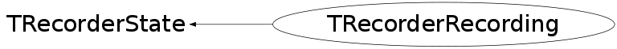

class TRecorderRecording: public TRecorderState
Represents state of TRecorder when recording events
Function Members (Methods)
public:
protected:
| TRecorderRecording(TRecorder* r, const char* filename, Option_t* option, Window_t* w, Int_t winCount) | |
| void | TRecorderState::ChangeState(TRecorder* r, TRecorderState* s, Bool_t deletePreviousState) |
| Bool_t | StartRecording() |
private:
| (unknown) | () |
| void | CopyEvent(Event_t* e, Window_t wid) |
| Bool_t | IsFiltered(Window_t id) |
| void | SetTypeOfConfigureNotify(Event_t* e) |
Data Members
private:
| Long64_t | fBeginPave | TLatex/TPaveLabel edition starting time |
| TRecCmdEvent* | fCmdEvent | The newest commandline event to be stored in TTree |
| Bool_t | fCmdEventPending | Indication if there is a still pending commandline event that should be stored. |
| TTree* | fCmdTree | TTree with recorded commandline events |
| TRecExtraEvent* | fExtraEvent | The newest extra event to be stored in TTree |
| TTree* | fExtraTree | TTree with recorded extra events (PaveLabels and Texts) |
| TFile* | fFile | ROOT file to store recorded events in |
| Bool_t | fFilterEventPave | Special flag to filter events during the pave recording |
| Window_t* | fFilteredIds | Only when GUI for recorer is used: IDs of windows that creates that GUI. |
| Int_t | fFilteredIdsCount | Only when GUI for recorder is used: Count of windows in GUI recorder |
| TRecGuiEvent* | fGuiEvent | The newest GUI event to be stored in TTree |
| TTree* | fGuiTree | TTree with recorded GUI events |
| TTimer* | fMouseTimer | Timer used for recording mouse position |
| TRecorder* | fRecorder | Reference to recorder (owner of this state) is kept in order to switch |
| Int_t | fRegWinCounter | Counter of registered ROOT windows. |
| TTimer* | fTimer | Timer used for recording |
| ULong64_t | fWin | The newest registered window to be stored in TTree |
| TTree* | fWinTree | TTree with registered windows |
Class Charts
{kind=link}
{kind=link}
{kind=link}
{kind=link}

Function documentation
TRecorderRecording(TRecorder* r, const char* filename, Option_t* option, Window_t* w, Int_t winCount)
Initializes TRecorderRecording for recording What is allocated here is deleted in destructor
Bool_t StartRecording()
Connects appropriate signals and slots in order to gain all registered windows and processed events in ROOT and then starts recording
void RegisterWindow(Window_t w)
void RecordCmdEvent(const char* line)
void RecordGuiEvent(Event_t* e, Window_t wid)
Records GUI Event_t *e different from kConfigureNotify (they are recorded in TRecorderRecording::RecordGuiCNEvent) It is called via signal-slot when an event is processed in TGClient::HandleEvent(Event_t *event) or in TGClient::HandleMaskEvent(Event_t *event, Window_t wid) If signal is emitted from TGClient::HandleEvent(Event_t *event), then wid = 0
void RecordGuiBldEvent(Event_t* e)
Special case for the gui builder, having a timer handling some of the events.
void RecordGuiCNEvent(Event_t* e)
Records GUI Event_t *e of type kConfigureNotify. It is called via signal-slot when an kConfigureNotify event is processed in TGFrame::HandleEvent
void RecordExtraEvent(TString line, TTime extTime)
Records TLatex or TPaveLabel object created in TCreatePrimitives, ExtTime is needed for the correct replay of these events.
Bool_t IsFiltered(Window_t id)
Returns kTRUE if passed id belongs to window IDs of recorder GUI itself
void SetTypeOfConfigureNotify(Event_t* e)
Sets type of kConfigureNotify event to one of EConfigureNotify On Linux paremeters of GUI event kConfigureNotify are different than parameters of the same event executed on Windows. Therefore we need to distinguish [on Linux], if the event is movement or resize event. On Windows, we do not need to distinguish them.
TRecorderRecording(TRecorder* r, const char* filename, Option_t* option, Window_t* w, Int_t winCount)